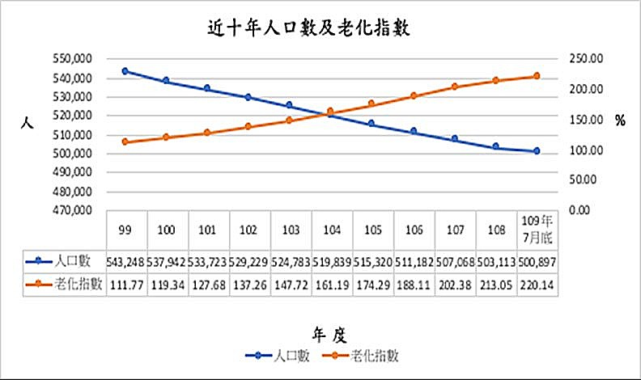
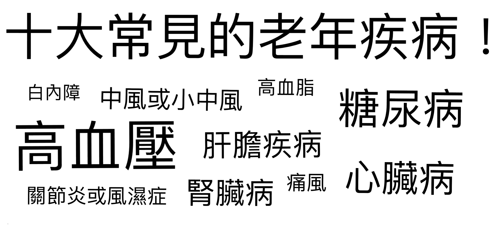

我們關心的從少子化及醫療與科技的進步，我們日漸步入了高齡化的社會。針對老年人的部分，我們希望民眾更加關心他們將要面臨且正在身邊發生的問題。 |  |
高齡化又稱人口老化，臺灣以短短 25 年便由高齡化社會進入高齡社會，也就是說，每 7 人便有 1 人是老人。
1.高齡化社會 ─ 65 歲以上老年人口佔總人口比率達 7%
2.高齡社會 ─ 65 歲以上老年人口佔總人口比率達 14%
3.超高齡社會 ─ 65 歲以上老年人口佔總人口比率達 20%
便由高齡化社會進入高齡社會，每 7 人便有 1 人是老人。
老無可避免，人口高齡化導致了壽命延長和生育下降。生育減少是如今全球人口高齡化的主要致因。
1. 各縣市老化嚴重 ─ 臺灣從原 2011 年的 3 個增加至 2018 年三月的 15 個；
2. 嘉義最老，六都裡臺北市最老 ─ 受工作機會、社會福利、醫療資源、交通、
房價等因素影響，嘉義為全臺縣市最老地區，老年人口比 18.61%；六都
中則以臺北市最老，老年人口比率 16.58%。
提出的「活力老化」和「健康老化政策」去改善老人與經濟及社會生活的融合，建構符合老人需求的健康照護體系。
2002年WHO對高齡社會來臨提出「活力老化」政策框架，強調「社會參與」
管道的建立；「身心健康」環境的形成；「社會、經濟及生命安全的確保」。
2009年OECD提出「健康老化政策」，重要的推行策略架構，包括：
1. 改善老人與經濟及社會生活的融合； 建構較佳的生活型態；
2. 建構符合老人需求的健康照護體系；
3. 關照社會和環境面向之健康影響因素。


老年疾病的特色
老化會使得老人的身體功能逐漸退化，器官功能、生理數值、代謝和神經反應等的表現也會跟年輕時不太一樣。
包括:除了身體功能的退化，例如視力聽力下降、吞嚥功能變差、活動力及平衡感減退之外，部分年長者還會伴隨著程度不等的心智功能退化，出現記憶、認知功能或憂鬱等問題。身體和心理的失能，不僅會隨著年紀增加而加重，也會與疾病產生交互影響，使得高齡者的照護更為複雜。
65歲以上民眾平均有超過3種慢性病，甚至有研究顯示，85歲以上只有不到5%沒有任何一種慢性病。高齡者的疾病不僅多，而且常是跨器官系統，最常見的包括高血壓、糖尿病、高血脂、心臟病、腦中風、骨質疏鬆、退化性關節炎、便秘、失禁等。
老年人因為身心功能的退化，所以生病時所產生的症狀表現會和一般成年人不一樣。例如在大家的認知中，肺炎會有發燒、咳嗽、呼吸困難等症狀，但許多老年人得到肺炎時卻沒有任何發燒及呼吸道的症狀，卻出現虛弱、食慾差和意識混亂的現象，這樣不典型的症狀表現，常常會影響醫師的診斷，因此延遲治療的時間。所以老年人生病時，除了家人細心的觀察、機警地及早就醫外，若能有具有老年醫學訓練的醫師團隊進行疾病診斷會比較理想。
老年人在接受醫療處置的時候，比較容易出現不良反應，因此也較難預期治療成效。例如用藥，臨床上醫師開立的藥物符合病情使用，但此藥物產生副作用的風險可能高於治療的好處時，就是所謂「潛在不當用藥」。這種情形在一般成年人較少發生，但老年人因為身心功能退化，發生機會較高。 當然除了藥物，同樣情況也適用在手術或其他侵入性治療。